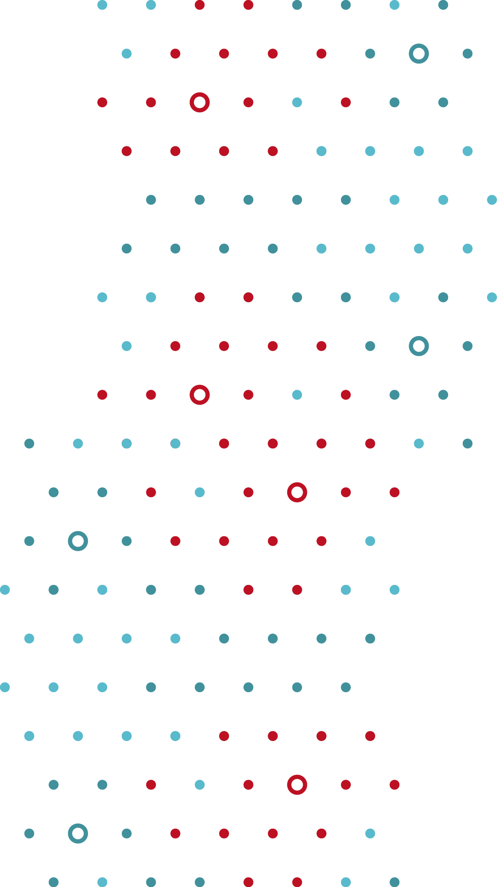

Lokace
3.7.2021
Výstaviště Kroměříž
49.2832325N, 17.3922756E
V den startu bude vstup na Výstaviště Kroměříž ZDARMA!
Účastník je povinen dodržovat aktuální platná nařízení vlády.
V celém areálu poslouchejte pokynů pořadatelů.
Program a konání závodu bude upraveno podle aktuálních vládních nařízení platných v den závodu!
Výstaviště Kroměříž
49.2832325N, 17.3922756E
V den startu bude vstup na Výstaviště Kroměříž ZDARMA!
Účastník je povinen dodržovat aktuální platná nařízení vlády.
V celém areálu poslouchejte pokynů pořadatelů.
Program a konání závodu bude upraveno podle aktuálních vládních nařízení platných v den závodu!
Tratě
T50
délka ≈ 50 kmpřevýšení ≈ 1000 m
START 11:00
limit pro dojetí 16:00
limit 500 závodníků (startovní vlny dle aktuálního vládního omezení)
T30
délka ≈ 33 kmpřevýšení ≈ 620 m
START 11:15
limit pro dojetí 16:00
limit účastníků – není (startovní vlny dle aktuálního vládního omezení)
Mapa pro rok 2021 - PDF nebo GPX. Trasa je stále v připomínkovém řízení, ale potenciální změny by byly pouze kosmetické.
V případě nepříznivého počasí budou trasy (T50/T30) upraveny pro lepší průjezdnost.
Harmonogram
Pátek
18:00–20:00 prezentace T50+T30Sobota
8:00–10:00 prezentace T508:00–10:30 prezentace T30
11:00 START T50
11:15 START T30
15:00–16:00 vyhlášení výsledků - dle aktuálního vládního omezení)
Covid-19
Čestné prohlášení
Pro zajištění, že závod proběhne podle platných opatření proti šíření nemoci Covid-19, Tě při registraci požádáme o podepsání čestného prohlášení o neexistenci příznaků a provedeném testování virového infekčního onemocnění.Jeho plné znění si také můžeš přečíst zde [PDF].
Přihláška
Seznam přihlášených
Přihlášky ONLINE od 1. 6. 2021
STARTOVNÉ T50
do 30. 6. 2021 (včetně) 500 Kč
1. 7.–3. 7. 2021 600 Kč
při prezentaci 600 Kč
STARTOVNÉ T30
do 30. 6. 2021 (včetně) 400 Kč
1. 7.–3. 7. 2021 500 Kč
při prezentaci 500 Kč
PLATBA STARTOVNÉHO
Bezhotovostní úhrada na účet číslo 5193378319/0800
variabilní symbol Vám bude zaslán s potvrzením o úspěšné registraci.
Hotovostní úhrada v den startu při prezentaci.
Přijaté platby po 1. 7. 20:00 nemusí být spárovány s přihláškou, a proto bude startovné považováno za neuhrazené.
Případné nesrovnalosti budou řešeny individuálně s ředitelem závodu při prezentaci. Ve čtvrtek 1. 7. o půlnoci bude ukončena možnost se přihlašovat online.
!!Uhrazené startovné se v případě neúčasti na závodě nevrací!!
Do 28. 6. 2021 (včetně) je možný převod uhrazeného startovného na jiného účastníka s promítnutím změny do startovní listiny.
STARTOVNÉ ZAHRNUJE
Startovní balíček, měření časomírou, občerstvení a pitný režim v průběhu i po závodě, zajištění tratí, mytí kol, parkování v areálu, ale hlavně INTENZIVNÍ ZÁŽITEK!
Kategorie
T50
| M1 | junioři do 19 let (2002 a ml.) |
| M2 | muži 20 - 29 let (2001 - 1992) |
| M3 | muži 30 - 39 let (1991 - 1982) |
| M4 | muži 40 - 49 let (1981 - 1972) |
| M5 | muži 50 - 59 let (1971 - 1962) |
| M6 | muži nad 60 let (1961 a st.) |
| Ž1 | ženy (1986 a ml.) |
| Ž2 | ženy (1985 a st.) |
T30
| Mk1 | muži do 19 let (2002 a ml.) |
| Mk2 | muži nad 19 let (2001 a st.) |
| Žk1 | ženy do 19 let (2002 a ml.) |
| Žk2 | ženy nad 19 let (2001 a st.) |
Ceny pro vítěze
Ve spolupráci se sponzory závodu jsme připravili finanční odměny pro první tři muže v absolutním
pořadí (3000Kč, 2000Kč, 1000Kč) dlouhé trasy.
Pro první tři ženy v absolutním pořadí jsou také přichystány peněžní odměny (2000Kč, 1000Kč, 500Kč).
Pro první tři ženy v absolutním pořadí jsou také přichystány peněžní odměny (2000Kč, 1000Kč, 500Kč).
Výsledky CH50
-
2021
-
2020 - Covid
-
2019
-
2018
-
2017
-

-
2016
-
2015
-
2014
-
2013
-
2012
-
2011
-
2010
-
2009
-
2008
-
2007
Fotogalerie CH50
-
2019
- foto od Viléma Horáčka
- foto od ReinerPhoto
- foto od Michala Kuchyňky
-
2018
- foto od Viléma Horáčka
- foto od Petera Tvaróga
- průjezdy na rozdělení dlouhé a krátké trasy od Petra Procházky
-
2017
- foto od Polidy
- foto od Viléma Horáčka
- foto od Jana Reinera
- foto od Františka Blahy
-
-
2016
- foto od Polidy
- foto od Viléma Horáčka
-
2015
- foto od V+V Horáčkových
- foto od Jana Reinera
- foto od Zdeňka Schovance
-
2014
- foto od Jana Reinera
-
2012
- foto od Miliče Fojta
Kontakt
Email - oddil@cyklosportchropyne.cz
Ředitel závodu V. Kučera - +420 603 446 917
Cyklistický oddíl Cyklosport Chropyně, sportovní spolek
Komenského 348
76 811, Chropyně
IČ: 65268792
Ředitel závodu V. Kučera - +420 603 446 917
Cyklistický oddíl Cyklosport Chropyně, sportovní spolek
Komenského 348
76 811, Chropyně
IČ: 65268792


dětské závody

oddíl
Komenského 348, 768 11 Chropyně
+420 603 446 917
prodejna@cyklosportchropyne.cz
odpovědný vedoucí:
Vladimír Kučera
IČO: 66702593, DIČ: CZ7309015703
+420 603 446 917
prodejna@cyklosportchropyne.cz
odpovědný vedoucí:
Vladimír Kučera
IČO: 66702593, DIČ: CZ7309015703
Rozumím